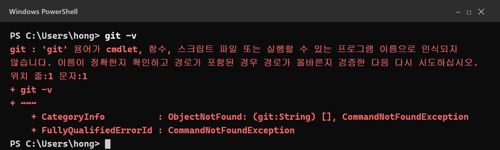
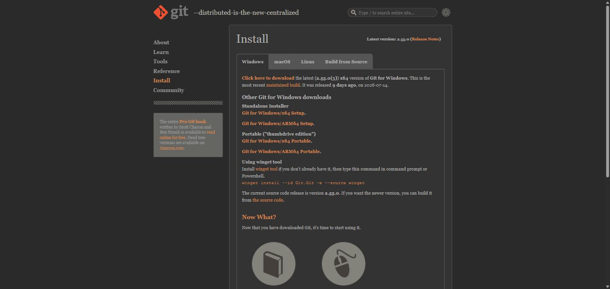
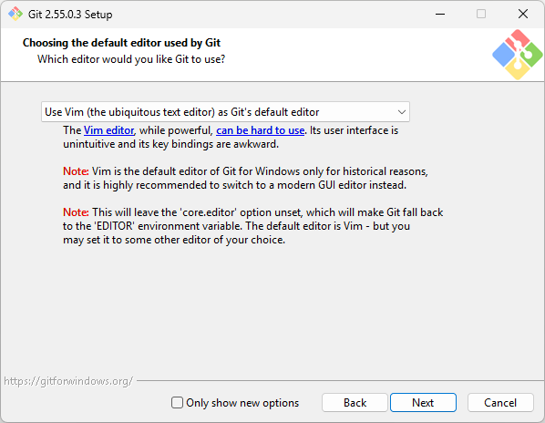
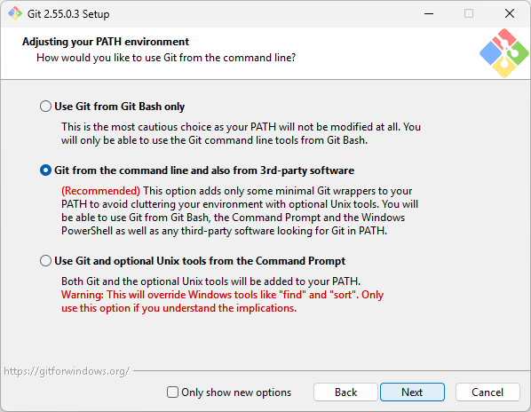
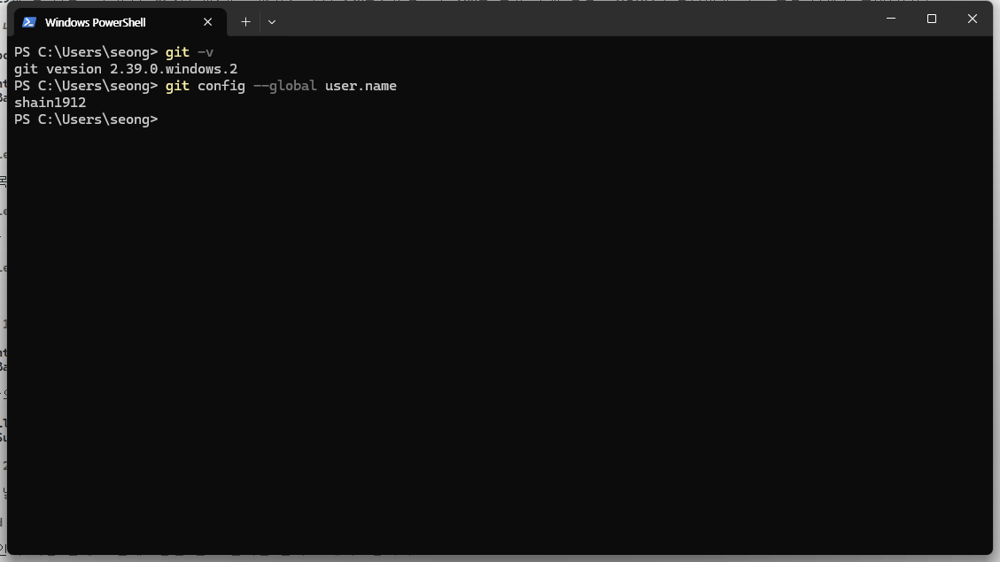
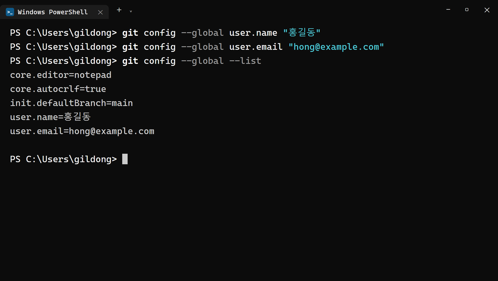

3장 Git for Windows 설치¶
이 장에서 배우는 것
- git이 바이브코딩에서 왜 "안전벨트"인지 이해합니다
- Git for Windows를 다운로드하고, 헷갈리는 설치 옵션을 골라 설치합니다
git -v로 설치를 확인하고, 이름과 이메일 첫 설정을 마칩니다- 저장소·커밋·브랜치 — 딱 세 단어의 개념을 그림 한 장으로 잡습니다
3.1 git은 왜 필요한가 — 되돌리기는 바이브코딩의 안전벨트¶
2장에서 Node.js를 설치했으니, 이번에는 git 차례입니다. 그런데 솔직히 말해서, git은 처음 듣는 분에게는 꽤 낯선 도구입니다. "버전 관리 시스템"이라는 딱딱한 이름표를 달고 있고, 프로그래머들이 쓰는 전문 도구라는 인상이 강하지요. 코드를 직접 짜지도 않을 건데 이걸 왜 설치해야 할까요?
답은 이 책의 핵심 정체성인 바이브코딩에 있습니다. 바이브코딩은 말로 시키고 AI가 코드를 쓰는 방식입니다. AI는 빠릅니다. 여러분이 "지도에 마커를 찍어줘"라고 한마디 하면 몇 초 만에 파일 서너 개를 만들거나 고칩니다. 그런데 빠르다는 건 양날의 검입니다. 가끔 AI는 우리가 기대한 것과 전혀 다른 방향으로 코드를 뒤엎어 놓기도 합니다. 잘 돌아가던 화면이 갑자기 하얗게 변하고, 어제까지 멀쩡했던 버튼이 사라지는 일이 실제로 일어납니다.
이때 필요한 말이 딱 하나 있습니다.
"방금 전으로 되돌려줘."
이 한마디가 통하려면, 컴퓨터 어딘가에 "방금 전"이 기록되어 있어야 합니다. 그 기록 장치가 바로 git입니다. git은 프로젝트 폴더의 상태를 원하는 순간마다 사진 찍듯 저장해 두고, 언제든 그 시점으로 폴더 전체를 되돌릴 수 있게 해 줍니다. 게임으로 치면 세이브 포인트입니다. 보스전에 들어가기 전에 세이브를 해 두면, 져도 다시 도전할 수 있지요. 세이브 없이 보스전에 들어가는 사람은 없습니다.
자동차에 비유하면 이렇습니다. AI는 엔진입니다. 엄청나게 빠르지요. git은 안전벨트입니다. 안전벨트가 있다고 사고가 안 나는 건 아니지만, 사고가 나도 다치지 않습니다. 안전벨트를 맨 운전자는 속도를 낼 수 있습니다. 마찬가지로 git이 있으면 AI에게 과감하게 일을 시킬 수 있습니다. "실패해도 되돌리면 그만"이라는 든든함이 바이브코딩의 속도를 만들어 줍니다.
실제 상황을 하나 상상해 볼까요? 이 책의 후반부에서 여러분은 지도에 카테고리 필터를 붙이게 됩니다. 그때 AI에게 "필터 버튼 디자인을 좀 더 예쁘게 바꿔줘"라고 시켰는데, AI가 버튼만 고치는 게 아니라 화면 전체의 스타일 파일을 통째로 다시 쓰는 바람에 지도가 화면 밖으로 밀려나 버렸다고 합시다. 어디가 어떻게 바뀌었는지 파일을 일일이 뒤져 원상 복구하는 일은, 코드를 모르는 사람에게는 사실상 불가능합니다. 하지만 직전에 세이브가 있다면 이야기가 다릅니다. "되돌려줘" 한마디로 몇 초 만에 사고 이전으로 돌아가고, 이번에는 "버튼 색만 바꿔줘, 다른 파일은 건드리지 마"라고 더 정확하게 다시 시키면 됩니다. 실패가 값싸지면, 시도는 과감해집니다.
"Ctrl+Z가 있잖아요?"라고 물으실 수 있습니다. 좋은 질문입니다. 하지만 Ctrl+Z는 파일 하나, 그것도 편집기를 열어 둔 동안만 통하는 되돌리기입니다. AI는 한 번에 여러 파일을 고치고, 새 파일을 만들고, 어떤 파일은 지우기도 합니다. 편집기를 닫으면 Ctrl+Z 기록도 사라집니다. 반면 git은 프로젝트 폴더 전체를 통째로, 컴퓨터를 껐다 켜도, 몇 달이 지나도 되돌릴 수 있습니다. 차원이 다른 되돌리기입니다.
💡 팁
저자의 실제 작업 습관을 하나 공개하면 이렇습니다. AI에게 큰 작업을 시키기 전에 반드시 세이브(커밋)를 하나 만들어 둡니다. 그리고 결과가 마음에 안 들면 미련 없이 되돌립니다. 세이브가 자주 있을수록 AI에게 더 과감한 주문을 할 수 있습니다. "일단 시켜 보고, 아니면 되돌린다" — 이게 바이브코딩의 리듬입니다.
참고로 git은 취미용 장난감이 아닙니다. 전 세계 소프트웨어 개발 현장의 표준 도구이고, 우리가 앞으로 쓸 GitHub(5장), Claude Code(4장), Orca(6장)가 모두 git 위에서 굴러갑니다. 오늘 설치하는 이 작은 프로그램이 이 책 전체의 기반 공사인 셈입니다. 이제 설치할 이유가 충분히 생겼으니, 진짜로 설치해 봅시다.
3.2 이미 설치되어 있는지 확인하기¶
설치 파일을 받기 전에, 혹시 내 컴퓨터에 git이 이미 있는지부터 확인합니다. 다른 프로그램을 설치할 때 함께 딸려 왔을 수도 있거든요. 2장에서 했던 것과 똑같이, 시작 버튼을 눌러 터미널(또는 PowerShell)을 열고 아래를 입력한 뒤 Enter를 누릅니다.
두 가지 결과 중 하나가 나옵니다. git version 2.51.0.windows.1처럼 버전 번호가 나온다면 축하합니다 — 이미 설치되어 있으니 3.5절의 "첫 설정"으로 건너뛰시면 됩니다. 반대로 아래처럼 빨간 글씨의 오류가 나온다면, git이 없다는 뜻입니다.

"용어가 인식되지 않습니다"라는 문구는 2장에서 본 것과 같은 의미입니다. 윈도우가 git이라는 이름의 프로그램을 어디서 찾아야 할지 모른다는 뜻이지요. 지금부터 설치해서 알려 주면 됩니다.
3.3 다운로드와 설치 시작¶
브라우저를 열고 주소창에 gitforwindows.org 를 입력합니다. "Git for Windows"라는 이름 그대로, 윈도우용 git을 배포하는 공식 사이트입니다. 첫 화면 한가운데의 Download 버튼을 누르면 다운로드 페이지로 이동합니다.

다운로드 목록에서 64-bit Git for Windows Setup을 선택합니다. 요즘 윈도우 PC는 거의 전부 64비트이니 고민할 필요 없습니다. 내려받은 Git-2.xx.x-64-bit.exe 파일을 더블클릭해 실행합니다. "이 앱이 디바이스를 변경할 수 있도록 허용하시겠어요?"라는 사용자 계정 컨트롤 창이 뜨면 예를 누릅니다.
설치 마법사가 시작되면 라이선스 안내(GNU General Public License) 화면이 먼저 나옵니다. git이 누구나 무료로 쓸 수 있는 오픈소스 소프트웨어라는 안내이니 Next를 누릅니다. 설치 경로 선택 화면도 기본값 그대로 Next, 구성 요소 선택 화면(바탕화면 아이콘, 탐색기 메뉴 연동 등을 고르는 곳)도 기본값 그대로 Next를 누릅니다.
여기까지는 쉽습니다. 문제는 그다음부터입니다.
3.4 설치 옵션, 뭘 골라야 할까¶
Git for Windows 설치 마법사는 선택 화면이 유난히 많기로 유명합니다. 에디터 선택, 브랜치 이름, PATH, 줄바꿈 처리… 열 개가 넘는 질문이 연달아 나옵니다. 처음 보면 "내가 뭘 잘못 고르면 큰일 나는 거 아냐?" 하고 겁이 나지요.
미리 결론부터 말씀드립니다. 모르는 화면은 기본값 그대로 Next. 이 원칙 하나면 됩니다. Git for Windows의 기본값은 수많은 사용자의 경험이 쌓여 정해진 무난한 선택지라서, 그대로 두어도 이 책의 모든 실습이 잘 돌아갑니다. 그리고 이 화면들에서 무엇을 고르든 설치 후에 전부 바꿀 수 있으니, "잘못 고르면 되돌릴 수 없다"는 걱정은 접어 두셔도 됩니다. 다만 두 개의 화면만은 잠깐 멈춰서 살펴볼 가치가 있습니다.
화면 하나 — 기본 에디터 선택 (Choosing the default editor used by Git)¶
git이 여러분에게 메시지를 입력받아야 할 때 어떤 편집기를 열지 고르는 화면입니다. 기본값이 Vim으로 되어 있는데, 이것만은 바꾸시길 권합니다. Vim은 강력하지만 조작법이 워낙 독특해서, 초보자가 실수로 Vim 화면에 들어가면 종료하는 방법조차 몰라 당황하기 딱 좋습니다. 실제로 "Vim에서 나가는 법"은 전 세계 개발자 커뮤니티의 유명한 밈일 정도입니다.
목록을 펼쳐 Use the Notepad as Git's default editor(메모장)를 선택하세요. 만약 Visual Studio Code를 이미 설치해 두셨다면 Use Visual Studio Code as Git's default editor도 좋은 선택입니다. 어느 쪽이든, 익숙한 편집기가 열린다는 사실이 중요합니다.

⚠️ 주의
에디터 선택을 깜빡하고 Vim인 채로 설치를 마쳤더라도 걱정하지 마세요. 나중에 터미널에서 git config --global core.editor notepad 한 줄이면 메모장으로 바꿀 수 있습니다. 잘못 골랐다고 재설치할 필요는 없습니다. 사실 이 장의 설치 옵션 전부가 그렇습니다 — 어떤 선택도 나중에 바꿀 수 있으니, 긴장하지 않으셔도 됩니다.
화면 둘 — PATH 설정 (Adjusting your PATH environment)¶
2장에서 만난 PATH가 여기서 다시 등장합니다. "git 명령을 어디서 쓸 수 있게 할까?"를 정하는 화면으로, 선택지가 세 개 있습니다.
- Use Git from Git Bash only — git을 전용 터미널(Git Bash)에서만 쓸 수 있게 합니다. 우리가 쓰는 PowerShell에서는
git이 안 먹히게 되니 선택하면 안 됩니다. - Git from the command line and also from 3rd-party software — PowerShell을 포함한 모든 터미널과 다른 프로그램에서 git을 쓸 수 있게 합니다. Recommended(권장) 표시가 붙은 기본값이고, 우리가 고를 답입니다.
- Use Git and optional Unix tools from the Command Prompt — 유닉스 도구까지 몽땅 PATH에 넣는 옵션인데, 윈도우 기본 명령과 이름이 겹쳐 부작용이 생길 수 있습니다. 설치 화면 스스로 경고를 띄우는 옵션이니 피합니다.
가운데 옵션이 기본으로 선택되어 있을 테니, 확인만 하고 Next를 누르면 됩니다.

나머지 화면들 — 전부 기본값으로¶
이후로도 질문이 계속 이어집니다. HTTPS 연결 방식, 줄바꿈 처리(Checkout Windows-style, commit Unix-style line endings), 터미널 에뮬레이터(MinTTY), git pull의 기본 동작, 자격 증명 관리자(Git Credential Manager)… 전부 기본값 그대로 Next를 누르시면 됩니다. 각각이 무슨 뜻인지 지금 알 필요는 없습니다. 마지막 화면에서 Install을 누르면 설치가 진행되고, 잠시 뒤 Finish로 마무리됩니다.
혹시 설치 화면 중에 "Adjusting the name of the initial branch in new repositories"(새 저장소의 첫 브랜치 이름)라는 화면을 보셨다면, 이것도 기본값(Let Git decide)으로 두면 됩니다. 브랜치가 무엇인지는 이 장의 끝에서 곧 만나게 됩니다.
3.5 설치 확인과 첫 설정¶
버전 확인¶
설치가 끝났으면 확인할 차례입니다. 여기서 2장에서 배운 규칙 하나를 복습합니다 — 터미널을 새로 열어야 합니다. 설치 전에 열어 둔 터미널은 바뀐 PATH를 모르는 상태라서, 거기서는 여전히 git이 인식되지 않습니다. 열려 있던 터미널 창을 닫고, 새 터미널을 열어 입력합니다.

git version 2.xx.x.windows.1 같은 버전 번호가 나오면 성공입니다. 뒤의 숫자는 설치 시점에 따라 다를 수 있고, 달라도 전혀 문제없습니다.
⚠️ 주의
새 터미널을 열었는데도 여전히 "인식되지 않습니다" 오류가 난다면 순서대로 점검해 보세요. 첫째, 정말로 새 창인지 확인합니다(탭을 새로 여는 것이 아니라 창을 완전히 닫았다가 다시 엽니다). 둘째, 컴퓨터를 한 번 재부팅하고 다시 시도합니다. PATH 변경이 재부팅 후에야 반영되는 경우가 가끔 있습니다. 셋째, 그래도 안 되면 설치 파일을 다시 실행해 3.4절의 PATH 화면에서 가운데 옵션(Recommended)이 선택되어 있는지 확인하며 재설치합니다. 2장의 Node.js 때와 똑같은 요령입니다.
이름과 이메일 등록하기¶
설치 확인이 끝났으면, 딱 두 줄짜리 첫 설정을 합니다. git은 세이브 포인트(커밋)를 만들 때마다 "누가 저장했는지"를 함께 기록합니다. 그래서 여러분의 이름과 이메일을 미리 알려 주어야 합니다. 터미널에 아래 두 줄을 한 줄씩 입력합니다. 따옴표 안의 내용은 여러분의 것으로 바꾸세요.
여기서 --global은 "이 컴퓨터의 모든 프로젝트에 공통으로 적용하라"는 뜻입니다. 한 번만 해 두면 앞으로 어떤 폴더에서 작업하든 다시 설정할 필요가 없습니다. 이름은 한글이든 영어든 닉네임이든 자유입니다. 다만 이메일은 5장에서 만들 GitHub 계정에 쓸 주소와 같은 것으로 해 두시길 권합니다. 그래야 나중에 GitHub에 올린 기록이 여러분의 계정 활동으로 깔끔하게 연결됩니다.
두 줄을 실행해도 터미널에는 아무 반응이 없습니다. 원래 그렇습니다. 잘 저장됐는지 눈으로 확인하고 싶다면 아래를 입력해 보세요.

목록에 user.name=홍길동과 user.email=hong@example.com이 보이면 완료입니다. 오타를 냈더라도 같은 명령을 다시 실행하면 새 값으로 덮어써지니 부담 갖지 마세요. 이 설정은 컴퓨터에 파일로 저장되어 계속 유지되므로, 이 두 줄은 이 책을 통틀어 오늘 딱 한 번만 입력하면 됩니다.
💡 팁
이메일을 공개하기 꺼려진다면 걱정하지 않으셔도 됩니다. GitHub는 실제 이메일 대신 쓸 수 있는 가림용 주소(아이디@users.noreply.github.com)를 제공합니다. 5장에서 GitHub 계정을 만든 뒤 이 주소로 바꿔 등록해도 됩니다.
3.6 딱 세 단어만 알면 됩니다 — 저장소, 커밋, 브랜치¶
git의 명령어는 수십 개가 넘지만, 이 책에서 여러분이 외워야 할 명령은 사실상 없습니다. 4장에서 Claude Code를 설치하고 나면, git 조작도 대부분 말로 시키게 되기 때문입니다. 대신 개념 세 개는 머릿속에 있어야 합니다. AI에게 시킬 때도, AI가 한 일을 확인할 때도 이 세 단어가 계속 나오거든요.
저장소(repository) 는 git이 지켜보는 프로젝트 폴더입니다. 평범한 폴더에 "이제부터 여기를 기록해 줘"라고 선언하면(이 선언이 git init입니다) 폴더 안에 .git이라는 숨김 폴더가 생기고, 그 순간부터 폴더는 저장소가 됩니다. 겉보기엔 그냥 폴더인데, 안에 타임머신이 한 대 들어 있는 셈입니다.
커밋(commit) 은 세이브 포인트 그 자체입니다. "지금 이 순간의 폴더 전체 상태"를 사진 한 장처럼 찍어서 기록에 남기는 행위이자, 그렇게 남은 기록 하나하나를 부르는 이름입니다. 커밋에는 시각, 아까 등록한 이름과 이메일, 그리고 "지도에 마커 표시 기능 추가"처럼 무엇을 했는지 적는 한 줄 메시지가 함께 저장됩니다. 커밋이 쌓이면 프로젝트의 역사책이 됩니다. 그리고 역사책의 어느 페이지로든 되돌아갈 수 있다는 것 — 이게 3.1절에서 말한 안전벨트의 정체입니다.
커밋 메시지를 쓰는 요령도 미리 하나 챙겨 두세요. 몇 주 뒤의 내가 읽어도 무슨 세이브인지 알 수 있게, "수정", "작업중" 같은 말 대신 "검색 결과 클릭하면 지도 이동하게 함"처럼 무엇이 달라졌는지를 적는 것입니다. 사실 바이브코딩에서는 이 메시지조차 AI가 대신 써 주는 경우가 많지만, AI가 써 준 메시지가 적절한지 알아보는 눈은 여러분에게 있어야 합니다. 세이브 포인트에 이름표가 잘 붙어 있을수록 "어디로 되돌아갈지" 고르기도 쉬워집니다.
브랜치(branch) 는 실험용 평행 작업 공간입니다. 커밋의 줄기에서 샛길을 하나 내서, 본래 줄기를 건드리지 않고 새로운 시도를 해 보는 기능입니다. 예를 들어 "지도 디자인을 다크 모드로 확 바꿔 보고 싶은데, 망치면 어쩌지?" 싶을 때 샛길을 하나 내고 거기서 마음껏 실험합니다. 실험이 성공하면 본 줄기에 합치고, 실패하면 샛길째 버리면 됩니다. 본 줄기는 처음부터 끝까지 멀쩡합니다. 이 책의 실습은 대부분 main이라는 기본 줄기 하나로 진행하니, 지금은 "그런 샛길을 낼 수도 있구나" 정도만 알아 두면 충분합니다. 참고로 6장에서 만날 Orca의 워크트리도 이 브랜치 개념 위에서 여러 AI 에이전트를 동시에 부리는 기술입니다.
세 단어를 안전벨트 서사로 다시 엮으면 이렇습니다. 저장소라는 기록 공간에 커밋이라는 세이브 포인트를 쌓아 가며, 위험한 실험은 브랜치라는 샛길에서 한다. AI가 코드를 어떻게 뒤엎어 놓아도, 세이브 포인트가 있는 한 우리는 언제든 안전한 과거로 돌아갈 수 있습니다.
🗣 이렇게 시키세요 (4장 예고편)
Claude Code를 설치하고 나면, 되돌리기도 이렇게 말로 시키게 됩니다. 명령어를 외울 필요가 없다는 게 어떤 느낌인지 미리 맛보기로 보여 드립니다.
지금까지 작업한 걸 "지도 마커 기능 추가"라는 메시지로 커밋해줘.
방금 네가 고친 것 때문에 화면이 하얗게 나와. 마지막 커밋 상태로 전부 되돌려줘.
두 번째 프롬프트가 바로 이 장에서 말한 안전벨트를 당기는 순간입니다. 이 말이 통하려면 첫 번째 프롬프트, 즉 평소의 부지런한 세이브가 먼저라는 것도 함께 기억해 두세요.
3.7 마무리¶
📌 핵심 요약
- git은 프로젝트 폴더 전체를 시점별로 기록하고 되돌리는 도구로, AI에게 과감히 일을 시키게 해 주는 바이브코딩의 안전벨트입니다.
- 설치는 gitforwindows.org에서 64비트 설치 파일을 받아 진행하며, 옵션은 기본값이 원칙입니다. 단 기본 에디터는 Vim 대신 Notepad(또는 VS Code)로 바꿉니다.
- PATH 화면에서는 권장 옵션인 "Git from the command line and also from 3rd-party software"를 그대로 둡니다.
- 설치 후 새 터미널에서
git -v로 확인하고,git config --global로 이름과 이메일을 한 번만 등록합니다. - 저장소는 기록되는 프로젝트 폴더, 커밋은 세이브 포인트, 브랜치는 실험용 샛길입니다.
🤔 생각해보기
Q1. Ctrl+Z와 git의 되돌리기는 무엇이 다른가요? "범위"와 "지속성"이라는 두 단어를 넣어 설명해 보세요.
✍️ ________
✍️ ________
Q2. AI에게 큰 작업을 시키기 직전에 커밋을 만들어 두면 좋은 이유는 무엇일까요? 여러분의 말로 적어 보세요.
✍️ ________
✍️ ________
✏️ 연습 문제
- 새 터미널을 열어
git -v를 실행하고, 출력된 버전 번호를 적어 보세요. git config --global --list를 실행해 user.name과 user.email이 여러분의 정보로 등록되어 있는지 확인하세요. 오타가 있다면git config --global user.name "..."형식으로 고쳐 보세요.- 설치 마법사에서 기본 에디터를 Vim으로 두면 초보자에게 왜 곤란한지, 그리고 설치 후에 에디터를 바꾸는 명령이 무엇이었는지 본문에서 찾아 적어 보세요.
- 저장소·커밋·브랜치 세 단어를 게임(또는 여러분이 좋아하는 다른 비유)에 빗대어 각각 한 문장으로 설명해 보세요.
🔎 더 찾아보기
git log— 지금까지 쌓인 커밋(세이브 포인트) 목록을 시간순으로 보여 주는 명령.gitignore— 기록에서 제외할 파일을 지정하는 목록 파일. 비밀 키를 지킬 때 씁니다(8장·24장에서 실전 등장)GitHub Desktop— 명령어 없이 마우스로 git을 다루는 공식 GUI 프로그램Git Bash— Git for Windows가 함께 설치해 주는 리눅스풍 터미널git checkout/git restore— 과거 시점으로 되돌아갈 때 실제로 쓰이는 명령 키워드
다음 장 예고 — 안전벨트를 맸으니 드디어 주인공을 태울 차례입니다. 4장에서는 이 책의 핵심 도구인 Claude Code를 설치합니다. 가입과 요금제 선택부터
npm install -g @anthropic-ai/claude-code설치, 첫 실행과 로그인, 그리고 AI에게 일을 잘 시키는 프롬프트 4요소(맥락·목표·제약·출력)까지 — 말로 코딩하는 첫 경험이 시작됩니다.